02 Continue along Rochussenstraat
Continue 175 m.
Starting at the centre of Rotterdam and cycling West to Delfshaven, the route continues North along the Schie all the way to Delft, which makes for an attraactive and direct route with easy navigation. Distance: around 17 Km.
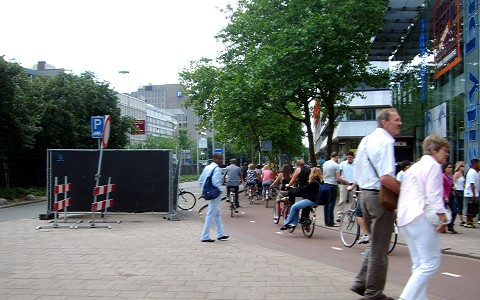
01 West on Westblaak
Continue 1.8 km.
02 Continue along Rochussenstraat
Continue 175 m.
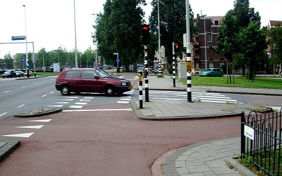
03 Continue along Rochussenstraat
Continue 0.6 km.
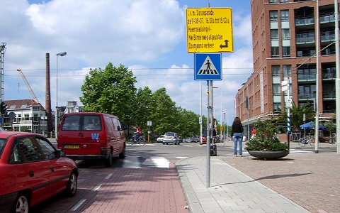
04 Straight-ahead onto Aelbrechtskade
Continue 1.4 km.
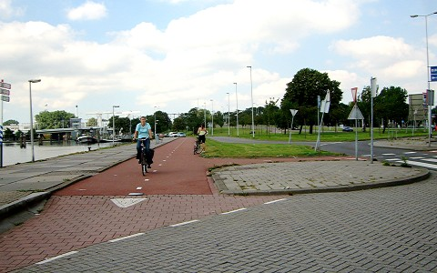
05 Continue along Aelbrechtskade
Continue 0.5 km.
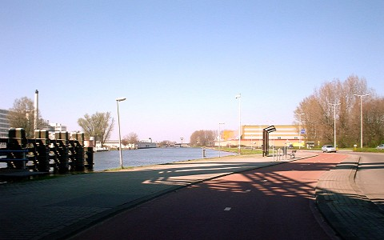
06 Continue along Abraham van Stolkweg
Continue 200 m.
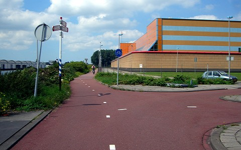
07 Continue along Professor Jonkersweg
Continue 400 m.
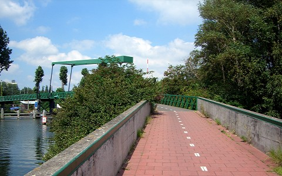
08 Continue over Jonkersbrug bridge
Continue 1.5 km.
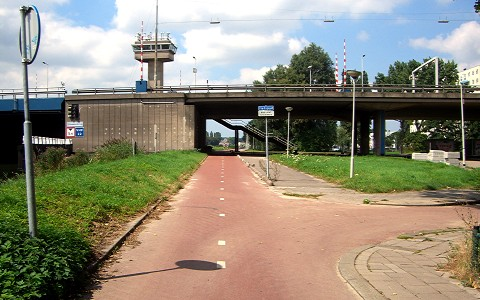
09 Continue along Delfshavenseweg
Continue 0.5 km.
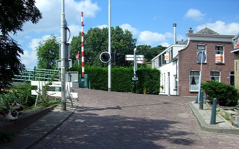
10 Right onto Overschiese Dorpsstraat
Continue 300 m.
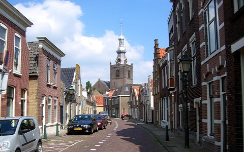
11 Continue along Overschiese Dorpsstraat
Continue 200 m.
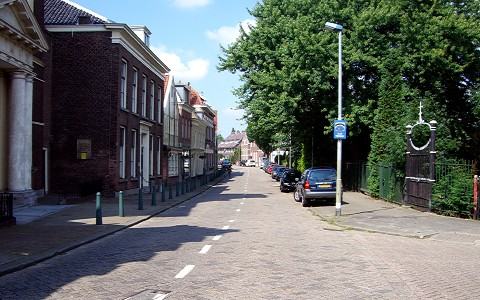
12 Continue along Delftweg
Continue 400 m.
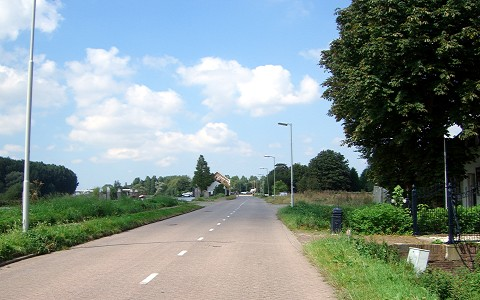
13 Continue along Delftweg
Continue 0.8 km.
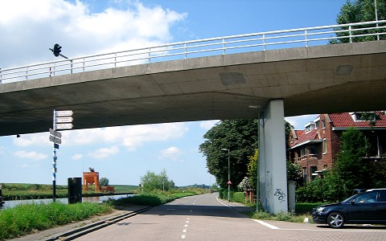
14 Continue along Delftweg
Continue 1.8 km.
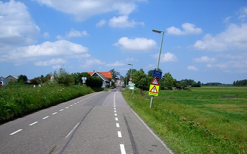
15 Continue along Delftweg
Continue 0.5 km.
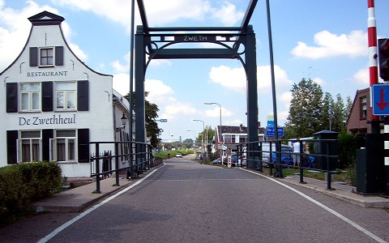
16 Continue along Delftweg
Continue 1.8 km.
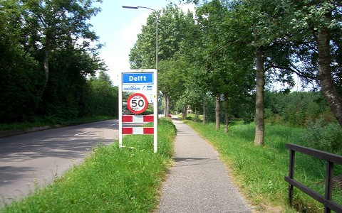
17 Continue along Rotterdamseweg
Continue 1.6 km.
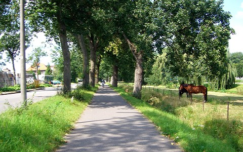
18 Continue along Rotterdamseweg
Continue 1.3 km.
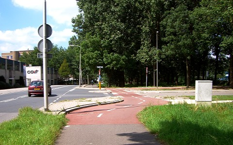
19 Continue along Rotterdamseweg
Continue 400 m.
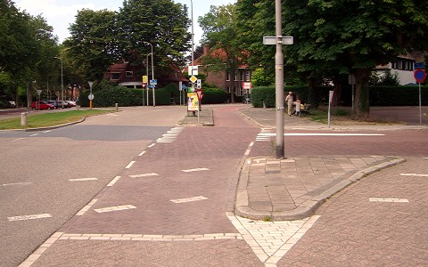
20 Bear right along Julianalaan
Continue 400 m.
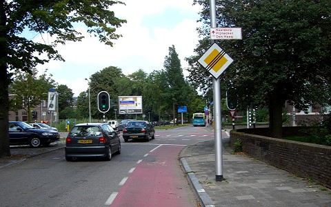
21 Left on Michiel de Ruyterweg
Continue 0.5 km.

22 Left on Zuidwal
Continue 300 m.
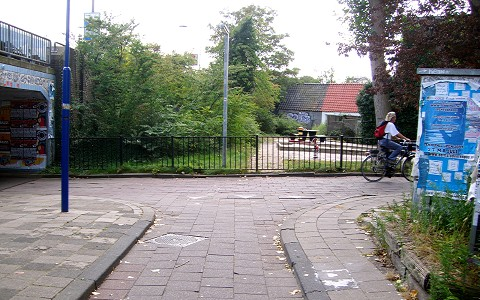
23 Right onto Ham
Continue 150 m.

24 Bear left onto Lange Geer
Continue 25 m.
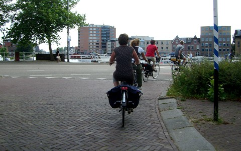
25 Right on Zuidwal
Continue 150 m.
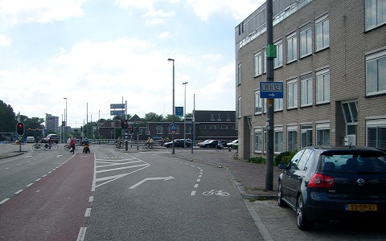
26 Right on Westvest
Continue 300 m.
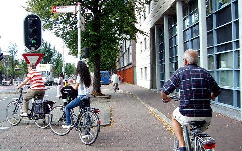
27 Left Van Leeuwenhoeksingel
Continue 150 m.
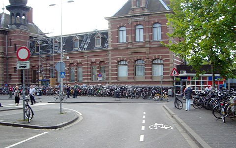
28 Arrive at Delft train station